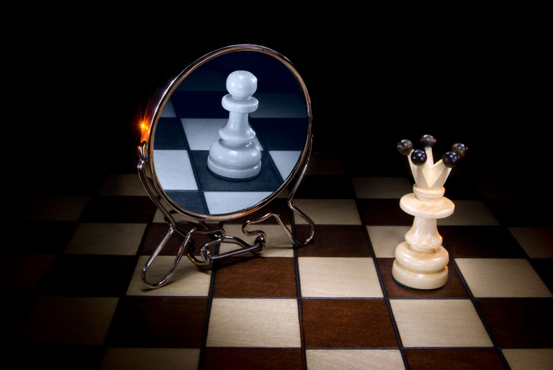
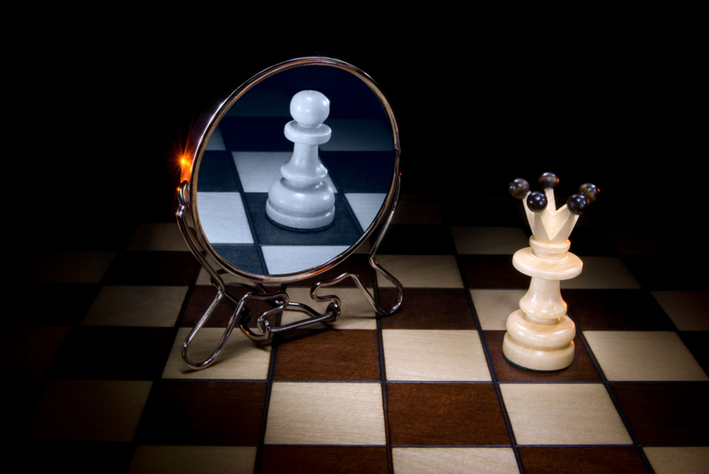

Шахматные задачи
Попробуешь решить?:)
ЗАДАНИЕ
1. Мат в два хода. Черные начинают
1. Мат в два хода. Белые начинают
1. Мат в три хода. Белые начинают
Шахматы
 

12-й чемпион мира А. Карпов говорил, что шахматы – это удивительная игра, содержащая в себе науку, искусство, спорт.
Шахматы формируют характер, делают человека умнее и физически сильнее , позволяют найти новых знакомых, друзей и увлекательно провести свой досуг.
Игра в шахматы способствует развитию логического мышления, фантазии. Мысленно рассчитывая возможные ходы и ответы соперника, приходится представлять позиции, которые могут возникнуть, давать им оценку (определять, у кого из играющих шахматную партию положение будет лучше), намечать план дальнейших действий, выискивать хитрые и коварные продолжения игры. Этим шахматы связаны с геометрией (раздел стереометрия) – решая задачи на уроках в школе, приходится представлять сложные геометрические фигуры (указанные в условии задачи), выискивать неординарные решения.